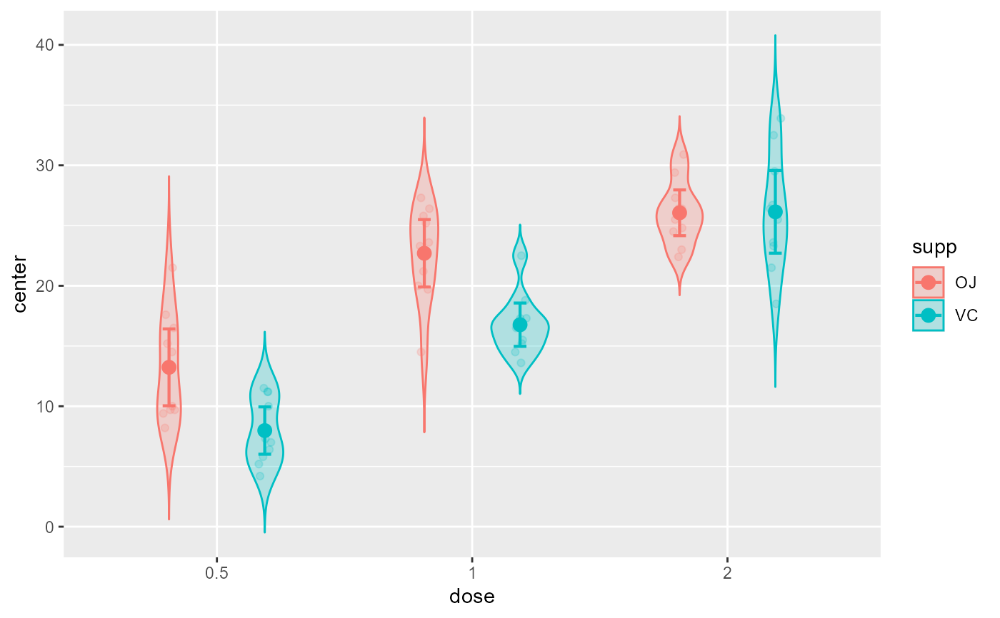

superbPlot point, jitter and violin plot layout
superbPlot.pointjitterviolin.RdsuperbPlot comes with a few built-in templates for making the final plots. All produces ggplot objects that can be further customized. Additionally, it is possible to add custom-make templates (see vignette 6). The functions, to be "superbPlot-compatible", must have these parameters:
superbPlot.pointjitterviolin( summarydata, xfactor, groupingfactor, addfactors, rawdata, pointParams = list(), jitterParams = list(), violinParams = list(), errorbarParams = list(), facetParams = list() )
Arguments
| summarydata | a data.frame with columns "center", "lowerwidth" and "upperwidth" for each level of the factors; |
|---|---|
| xfactor | a string with the name of the column where the factor going on the horizontal axis is given; |
| groupingfactor | a string with the name of the column for which the data will be grouped on the plot; |
| addfactors | a string with up to two additional factors to make the rows and columns panels, in the form "fact1 ~ fact2"; |
| rawdata | always contains "DV" for each participants and each level of the factors |
| pointParams | (optional) list of graphic directives that are sent to the geom_bar layer |
| jitterParams | (optional) list of graphic directives that are sent to the geom_bar layer |
| violinParams | (optional) list of graphic directives that are sent to the geom_bar layer |
| errorbarParams | (optional) list of graphic directives that are sent to the geom_errorbar layer |
| facetParams | (optional) list of graphic directives that are sent to the facet_grid layer |
Value
a ggplot object
Examples
# This will make a plot with jittered points and violins for the overall distribution superbPlot(ToothGrowth, BSFactors = c("dose","supp"), variables = "len", plotStyle = "pointjitterviolin" )# if you extract the data with superbData, you can # run this layout directly processedData <- superbData(ToothGrowth, BSFactors = c("dose","supp"), variables = "len" ) superbPlot.pointjitterviolin(processedData$summaryStatistic, "dose", "supp", ".~.", processedData$rawData)